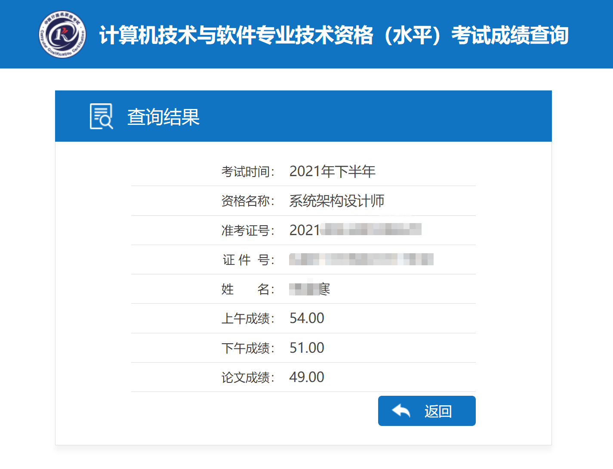

寄了，但有小涨，元旦前测一下更新上。
报名了但是复习拖延症又弃考了，真的捞。
报考了下半年的架构，上午题预计能过，下午案例铁定寄了，论文只准备了三层架构，但没考，考的是微服务，硬着头皮蹭上去的，肯定是跑题了，铁定也是寄，待分数下来贴一下，明年再战！
究极反转，过了，虽然没啥用，但还是开心的。
细想了一下没有必要所以就不迁移了。
2020过去了，年初的疫情肆虐，年末的疫情复起，致敬每一位抗疫战士。
这一年的工作，每天都在加班，很累，但是效率却是极其低下的。伴随着mr5、v618版本发布、702、502、901、101设备发售，ai二期版本发布，就这样结束了一整年的时间，整个团队横向纵向的各个环节的效率都是低的可怕的，目前这个情况预计还要延续。
接下来需要重整旗鼓，加强自身能力建设了，需要操起自己的节奏，学习和生活。
今年也抽空游玩了一些地方，年会去的北京，游玩了天坛天安门故宫和八达岭长城，感受了肃清的关外寒风；六安的天堂寨，确实是个避暑的好地方，可以近距离感受瀑布，很凉爽；安庆的巨石山，嘿嘿；池州的九华山，见到众多的香客，不知拥有虔诚之心的又有几人呢；成都的春熙路太古里，九眼桥，酒吧街，人民公园，杜甫草堂，宽窄巷子，锦里，不过都是商业化的小吃街，不是太喜欢，大熊猫基地，见到了可爱的小熊猫宝宝，真好，就是人有点多不能驻足观看， 九寨沟，碧蓝的海子太美，黄龙，千百个翠绿的池子；重庆的解放碑，长江索道，李子坝，洪崖洞；川蜀之旅很是辛苦，尤其是往九寨沟去的路上，经过汶川松潘县等，汶川的楼盖的很现代化，就是人很少了，不知道当年的伤痕随着时间的流逝是否淡了些，川蜀的美食是真的好，那个辣味，别的地方是真的比不上也吃不到的； 年末又随意的来到了池州的平天湖，落霞与孤鹜齐飞，秋水共长天一色，只是少了孤鹜，背景多了城市的轮廓。
今年也看了不少剧，国产悬疑剧崛起了，摩天大楼，白色月光，隐秘的角落，沉默的真相，迷雾追踪等等，更是喜欢请回答1988和绝命律师，不过律师只剩一季了，看看如何关联上老白和小粉。
毕业这么多年了，今年又参加了个软件设计师的考试，虽然准备不足，但好在过了，给接下来的学习增加了信心。
20222022
20232023